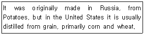
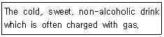
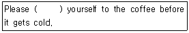

조주기능사 (2002-10-06 기출문제)
1과목: 주류학개론
1. 우리나라의 증류주인 소주는 처음에 무엇으로 유용하게 사용된 음료인가?
- 기분을 고조시키기 위하여
- 축제용으로
- 약용으로
- 보신용으로
(정답률: 83%)

2. 앙뜨레(Entree)에는 무슨 술을 제공해야 하는가?
- 칵테일주
- 쉐리주
- 적포도주
- 브랜디
(정답률: 38%)
3. 버어번(Bourbon) 위스키는 어느 나라의 술인가?
- 영국
- 불란서
- 미국
- 캐나다
(정답률: 80%)
4. 발포성포도주(sparkling wine)의 감도(甘度)를 표시하는 말 중 "데미 섹(Demi - sec)" 은 몇 % 의 감도를 말하는가?
- 1∼2 %
- 6∼7 %
- 8∼12 %
- 15∼19 %
(정답률: 55%)
5. 특별히 잘된 해의 포도로 만든 와인은 그 연호를 상표 라벨에 표시한다. 그 명칭은?
- 에이지드 와인(Aged Wine)
- 클라렛(Claret)
- 빈티지 와인(Vintage Wine)
- 드라이 와인(Dry Wine)
(정답률: 83%)
6. 다음 중 서로 관련이 없는 것은?
- Apple - Cider
- Pear - Perrg
- Malt - Gin
- Grape - Wine
(정답률: 70%)
7. 조주상 사용되는 표준계량의 표시 중에서 틀린 것은?
- 1티스푼(tea spoon)= 1/8온스
- 1스플리트(split) = 6온스
- 1핀트(pint) = 10온스
- 1포니(pony) = 1온스
(정답률: 63%)
8. 다음 중 장식으로 양파(Cocktail onion)가 필요한 것은?
- 마티니(Martini)
- 깁슨(Gibson)
- 좀비(Zombie)
- 다이퀴리(Daiquiri)
(정답률: 83%)
9. American whisky "86 proof"는 우리나라의 주정 도수로는 몇 도인가?
- 23도
- 33도
- 43도
- 53도
(정답률: 95%)
10. 칵테일(Cocktail)의 도량 용어와 관계 있는 단어는?
- 드라이(Dry)
- 드랍(Drop)
- 쉐이커(Shaker)
- 프로트(Float)
(정답률: 60%)
11. 1쿼트(quart)는 몇 온스(ounce)를 말하는가?
- 1온스
- 16온스
- 32온스
- 38.4온스
(정답률: 67%)
12. 럼(Rum)에 대한 설명 중 틀리는 것은?
- Light Rum
- Soft Rum
- Heavy Rum
- Medium Rum
(정답률: 82%)
13. Glass 종류가 아닌 것은?
- High Ball
- On the Rocks
- Straight
- Vermouth
(정답률: 69%)
14. 계란(egg)이 들어가는 칵테일에 주로 뿌려 주는 부재료는?
- Nutmeg Powder
- Lemon Powder
- Cinnamon Powder
- Chocolate Powder
(정답률: 87%)
15. 양조주(Fermented Liquor)에 속하는 술(Alcoholic Beverage)은 어떤 것인가?
- 샤르트루즈(Chartreuse)
- 진(Gin)
- 캄파리(Campari)
- 와인(Wine)
(정답률: 88%)
16. 펄케(pulque)를 증류해서 만든 술은?
- 럼
- 보드카
- 데킬라
- 아쿠아비트
(정답률: 65%)
17. 일반적으로 하드리커란 무엇을 일컫는가?
- 탄산음료
- 칵테일
- 비알콜 음료
- 증류주
(정답률: 76%)
18. 소주의 원료와 관계가 먼 것은?
- 쌀
- 보리
- 밀
- 맥아
(정답률: 63%)
19. 쥬니퍼 베리(Juniper Berry)를 넣은 술은 무엇인가?
- Irish Whisky
- Gin
- American Whisky
- Vodka
(정답률: 75%)
20. 잔 주위에 설탕이나 소금 등을 묻혀서 만드는 방법은?
- Shaking
- Building
- Floating
- Frosting
(정답률: 71%)
21. 다음 중 Straigt Glass로 부르지 않는 것은?
- Single Glass
- Whisky Glass
- Cocktail Glass
- Shot Glass
(정답률: 67%)
22. 다음에서 글래스(glass) 가장자리의 스노우스타일(snow style) 장식 칵테일로 어울리지 않는 것은?
- 키스오브파이어(Kiss of Fire)
- 마가리타(Magarita)
- 시카고(Chicago)
- 그라스 하프(Grass Hopper)
(정답률: 67%)
23. 생강을 주원료로 만든 탄산음료는?
- Soda Water
- Tonic Water
- Perrier Water
- Ginger Ale
(정답률: 92%)
24. 오렌지를 주원료로 만든 술이 아닌 것은?
- Triple Sec
- Tequila
- Grand Marnier
- Cointreau
(정답률: 78%)
25. 롱드링크 칵테일(Long drinks cocktail)인 것은?
- Mai Tai
- Martini
- Daiquiri
- Alexander
(정답률: 66%)
26. 스파클링 와인(sparking wine)으로 어울리지 않는 것은?
- 샴페인(Champagne)
- 젝트(Seket)
- 카바(Cava)
- 아르마냑(Armagnac)
(정답률: 73%)
27. 부드러우며 뒤끝이 깨끗한 한국고유의 약주로서 쌀로 빚으며 소주에 배, 생강, 울금 등 한약재를 넣어 숙성시킨 호남의 명주로 알려진 전북 전주의 전통주는?
- 두견주
- 국화주
- 이강주
- 춘향주
(정답률: 84%)
28. 칵테일 조주에서 가장 기본이 되는 술을 베이스(base)라고 하는데, 다음에서 베이스(base)로 합당하지 못한 것은?
- 위스키(whisky)
- 소다수(soda water)
- 보드카(vodka)
- 진(gin)
(정답률: 90%)
29. 얼음, 생크림, 계란, 과일 등을 혼합해서 만들기도 하고 프로즌 스타일의 칵테일을 만들 때 전기기구를 이용해서 만드는 조주법은?
- shaking
- building
- blending
- floating
(정답률: 66%)
30. 칵테일 조주방법에서 재료의 비중을 이용하여 내용물을 차례차례 위에 뛰우거나 쌓는 방법은?
- floating
- shaking
- blending
- stirring
(정답률: 82%)
2과목: 주장관리개론
31. 럼주의 주원료는?
- 사탕수수
- 소맥
- 포도
- 호프
(정답률: 98%)
32. 맨하탄 칵테일 드라이(Manhattan Cocktail Dry)를 제공하기 위해 준비해야 하는 고명(Garnish)은?(오류 신고가 접수된 문제입니다. 반드시 정답과 해설을 확인하시기 바랍니다.)
- Lemon
- Cherry
- Pearl onion
- Cocktail olive
(정답률: 29%)
33. 다음 중 1단위가 가장 적은 스탠드 바 계량 단위는?
- Table spoon
- Pony
- Jigger
- Dash
(정답률: 64%)
34. High ball은 어느 잔에 담아야 하는가?
- Champagne Glass
- Cocktail Glass
- Tumbler
- Goblet
(정답률: 59%)
35. 계란, 설탕 등이 들어가는 칵테일을 혼합할 때 사용하는 기구는?
- Hand Shaker
- Mixing Glass
- Strainer
- Jigger
(정답률: 72%)
36. 조주시 위생적인 주류 취급방법을 설명한 것 중 틀린 것은?
- 글라스에 얼음을 담을 때는 스쿠프(Scoop)나 집게를 사용한다.
- 조주사용 타월은 수시로 쓰기 때문에 허리띠로 기웠다가 쓰도록 한다.
- 조주사가 심한 감기에 걸렸을 때는 근무해서는 안된다.
- 담배를 피운 후이거나 얼굴 등 자기의 몸을 만진 후에는 손을 씻는다.
(정답률: 86%)
37. 효과적인 음료통제제도로 부적당한 것은?
- 주문시에는 서면구매 청구서를 사용한다.
- 검수시에는 송장과 구매 청구서를 대조, 체크한다.
- 영속적인 재고조사 시스템을 둔다.
- 바의 간이 창고에는 한달분의 재료를 저장한다.
(정답률: 70%)
38. 와인(Wine)의 장기저장 장소로 합당치 않은 것은?
- 시원한 장소(12-15℃)
- 진동이 없는 조용한 장소
- 직사광선이 들어오는 밝은 장소
- 환기가 잘 되는 건조한 장소
(정답률: 83%)
39. 저장관리원칙에 해당되지 않는 것은?
- 저장위치 표시
- 분류저장
- 품질보전
- 매상증진
(정답률: 84%)
40. 글라스(Glass)의 위생적인 취급방법으로 옳지 못한 것은?
- Glass는 불쾌한 냄새나 기름기가 없고 환기가 잘되는 곳에 보관해야 한다.
- Glass는 비누물에 닦고 뜨거운 물과 맑은 물에 헹구어 사용하면 된다.
- Glass를 차게 할 때는 냄새가 전혀 없는 냉장고에서 Frosting 시킨다.
- 얼음으로 Frosting 시킬 때는 냄새가 없는 얼음인가를 반드시 확인해야 한다.
(정답률: 66%)
41. 적포도주는 몇 도로 보관해서 마시는 것이 가장 좋은가?
- 8 - 10℃
- 12 - 14℃
- 17 - 19℃
- 22 - 25℃
(정답률: 39%)
42. 바 지배인(Bar manager)의 수행업무가 아닌 것은?
- 고객계층분석이 주 수행업무이다.
- 주장이 정돈되어 있도록 지휘· 감독한다.
- 얼음제조기와 다른 기물들의 작동기능을 점검한다.
- 재고조사, 물품 청구서 작성을 한다.
(정답률: 31%)
43. 칵테일 부재료는 어떻게 보관하는가?
- Open한 부재료는 냉장고에 보관한다.
- 쓰다 남은 부재료를 상온에 보관한다.
- 모든 부재료는 냉동고에 보관한다.
- 햇볕이 많이 들어오는 곳에 보관한다.
(정답률: 74%)
44. 기물 설치 및 설치관리 중 맞지 않는 것은?
- 바의 수도시설은 Mixing Station 바로 후면에 설치한다.
- 배수구는 바텐더의 바로 앞에, 바의 높이는 고객이 작업을 볼 수 있게 설치한다.
- 얼음제빙기는 Back Side에 설치하는 것이 가장 적절하다.
- 냉각기는 표면에 병따개 부착된 건성형으로 Station 근처에 설치한다.
(정답률: 34%)
45. 조주시 기본이 되는 단위는?
- ㏄(씨씨)
- g(그람)
- oz(온스)
- ㎎(밀리그람)
(정답률: 94%)
46. 주류의 구매관리에 있어서 적절하지 못한 것은?
- 최대 저장량은 2개월분이 적당하다.
- 다량의 주류저장은 도난 위험이 있으므로 비효율적이다.
- 증류주는 변질의 우려가 있으므로 다량 구매의 장점을 살린다.
- 재고로 발생된 비용은 자금 회전율을 늦추게 되므로 유의한다.
(정답률: 83%)
47. 다음 음료 중 차게 해서 보관하지 않는 것은?
- White Wine
- Dry Sherry
- Beer
- Brandy
(정답률: 70%)
48. 혼성주의 제조방법 중 성질이 다른 하나는?
- 발효법(Fermentation)
- 증류법(Distillation)
- 에센스법(Essence)
- 침출법(Infusion)
(정답률: 64%)
49. 스트레이너(Strainer)의 설명 중 틀린 것은?
- 철사망으로 되어 있다.
- 얼음이 글라스에 떨어지지 않게 하는 기구이다.
- 믹싱글라스와 함께 사용된다.
- 재료를 섞거나 소량을 잴 때 사용된다.
(정답률: 69%)
50. 바스푼(Bar spoon)의 설명 중 틀린 것은?
- 믹싱 스푼이라고도 한다.
- 재료를 섞을 때 사용한다.
- 소량의 술을 띄울 때 사용한다.
- 병마개 딸 때도 사용한다.
(정답률: 89%)
3과목: 고객서비스영어
51. 다음 설명에 알맞는 술 이름은?

- Rum
- Vodka
- Gin
- Whisky
(정답률: 88%)
52. Mixed drinks are increasigly being ordered "on the rocks".에서 "on the rocks"의 의미는?
- on the water
- on the stone
- on the ice
- on the whisky
(정답률: 66%)
53. 다음 영문에서 나타내는 것은?

- distilled liquor
- sodium chloride
- hard drink
- soft drink
(정답률: 81%)
54. Champagne should be drunk cold. The ideal way to cool it is by ( 괄호1 ) the bottle in a champagne bucket (괄호2 ) with water and ice.
- placing, filled
- taking, full
- doing, together
- handling, covered
(정답률: 48%)
55. What are used to measure out liquors for cocktails, highballs, and other mixed drinks?
- Jiggers
- Mixing glasses
- Bar spoons
- Pourers
(정답률: 32%)
56. 다음 ( ) 안에 알맞는 단어는?

- drink
- help
- like
- does
(정답률: 56%)
57. 「Are you free this evening?」의 가장 적당한 뜻은?
- 이것은 무료입니까?
- 오늘밤에 시간 있습니까?
- 오늘밤에 만나시겠습니까?
- 오늘밤에 개점합니까?
(정답률: 87%)
58. " 나는 진토닉이 싫다. " 의 적절한 영작은?
- I don't like a Gin with tonic
- l don't like Gin with tonic
- l don't like the Gin with tonic
- l don't know Gin with tonic
(정답률: 55%)
59. She ( 괄호1 ) a good picture. This baggage ( 괄호2 ) much room. 에서 괄호 안에 공통적으로 들어갈 단어는?
- has
- picks
- takes
- does
(정답률: 57%)
60. He bought me a telephone. 의 다른 표현은?
- He buy me a telephone.
- He did bought me a telephone.
- He bought a telephone for me.
- He bought telephone to me.
(정답률: 62%)